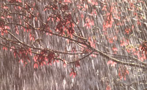
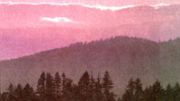

What's a steady rain
Summer is the wettest season of the year for the vast majority of the eastern half of the U.S. By wettest I mean greatest total amountof precipitation. But within summer, the months of July and August are also the time of the most torrential rainfalls in this part of the land. I am looking over a listing of record rainfalls for the eastern half of the U.S. Of 10 time-periods ranging from 1 minute up to 1 day, only the record for the longest-1 day-did not occur in either July or August. The record for 1 day-38.7 inches in Yankeetown, Florida in 1950-occurred on September 5-6...just past August.
How hard can it rain? As with most weather records, the figures are generally far more extreme than people would typically guess. Meteorologists have terms for rainfall intensity rates of up to more than 5 inches an hour-though admittedly it is rare for these rates to last for an entire hour. Here in New Jersey, there are typically only one or two days in a year when over three inches of rain falls in the entire day. Often I wonder if an inch has fallen in a single hour, but very rarely does that happen. Bearing this in mind, what do you think is the record for the most intense rainfall in the eastern U.S.? It occurred on the 4th of July in 1956. That day in Unionville, Maryland, 1.23 inches fell-in one minute!
What causes these record rainfalls? If you guessed tropical storms and hurricanes, you might be right in some cases. These storms drop immense amounts of precipitation over enormous areas-widespread rainfalls of 5, 10, or even (in the most extreme cases) 15 or 20 inches can occur over the course of a day or two. But even more intense rainfalls may occur in a highly localized region as a result of a quite different weather mechanism: a severe isolated stationary thunderstorm. I recall driving (not by choice!) through such a storm (a Level 6 on the weather radar) and going from dry road to water well above the tops of my tires all in less than half a mile. I barely managed to get back out, but when I did, I found the same cutoff point, and it never did rain far beyond that point all day.
Another time while searching New Jersey weather records, I found that the second heaviest daily rainfall in a 10-year period had been about 11 inches. But a weather station only about 2 miles away from the one which had recorded this amount had picked up a mere fraction of an inch that same July day. Thunderstorms usually go through their full cycle and die in an hour or so, and they usually move-but not always. And where they linger rainfall amounts can be staggering.
Nonetheless, Eastern rainfall is steadily predictable. Weather expert Richard A. Keen points out that in most years the precipitation which falls on most places in the eastern U.S. is within 20 percent of the average-"a reliability unheard of in most other parts of the world:' According to Keen, in some northeastern states the variability from year to year is less than 10 percent-and that is the lowest in the entire world.
Many people are confused about why sunrise or sunset times can differ greatly even between cities only a few dozen miles apart. But if you think about what is happening the mystery begins to clear. Imagine that you have a friend who lives 40 miles east of you. As we know, the Sun doesn't really head westward across the sky and set, it only seems to because the Earth is rotating us all eastward. But if that is the case then your friend will be rotated east to a position where the Sun is hidden by the west horizon a few minutes sooner than you are.
When communication and transportation were very slow, every town could have its own time-you could set your clock by sunrise or sunset. But in the U.S. it was a little more than a century ago that the railroad began to make the old practice of timekeeping unworkable. There had to be agreement on time between the cities along the route you were traveling or train schedules would be impossibly confusing.
The solution was time zones. Everyone within a time zone would synchronize clocks. The benefits would be far greater than any problem resulting from having the Sun rise or set at different clock times depending on how far east or west of the center of the time zone you were.
As a matter of fact, how far north or south you are also makes a great difference as to your times of sunrise and sunset because it makes a difference in the length of day. The latitude (north-south) effect is only not important around the equinoxes, when for a few days every place on Earth has what the equator has all year: day and night of equal length. The latitude effect on length of day is extremely important around the time of June solstice in the Northern Hemisphere. June solstice is the time when the north end of our planet is tilted most towards the Sun. The tilt is great enough that if you are north of the Arctic Circle around June solstice the Sun doesn't set at all. The farther south you are, the shorter the period that the Sun is above the horizon.
The combination of how far north you are and how far east or west you are in your time zone leads to some remarkable circumstances. I always remember that I observed the longest total lunar eclipse in U.S. history (on the night of July 5-6, 1982) on nearly the shortest possible night in the contiguous states (up near the Canadian border in North Dakota). But I also remember that I observed it from almost as far west in the Central Time Zone as I could be-and therefore experienced what was by the clock nearly the latest sunset and latest end of evening twilight possible in the U.S. south of Alaska. The year's latest sunset for people at 40 degrees North-about Philadelphia or Denver or San Franciscois 8:33 p.m. Daylight Saving Time. But my sunset on that day of the eclipse occurred at 9:50 p.m. CDT, with evening twilight technically lasting until 12:13 a.m. CDT.
Another interesting case involved two artist friends of mine. Both are landscape painters and like to paint sunset and twilight scenes. The two live only about 15 miles apart and they had a friendly bet about which one sees the sunset later from his or her home. I could decide their bet by using a highly precise computer program which I have. But I thought it was far more interesting to tell them that since one lives farther west in the eastern time zone, and the other farther north, then the answer to the question of who has the later sunset is (probably): both of them. At some times of year, being farther north makes the one artist have later sunsets; at other times of the year, being farther west makes the other artist have later sunsets.
Our world features blue skies and pink sunsets. But imagine a world where skies are pink and sunsets are blue. There is a such a world, and it's name is Mars. And if all goes well, on Independence Day, an unmanned American spacecraft will land on Mars and release an automated rover to explore the vicinity.
Back in the spring, Comet Hale-Bopp and Mars were brilliant in our skies. Now the comet is lost from view for several months as it departs on the opposite side of the Sun from us, and it will have become a much fainter object when it emerges back into (limited) visibility. Mars is plainly visible in the south and southwest during June and July evenings, but has faded greatly from its peak brilliance back in March. It is still one of the brighter points of light in the summer sky, though, and now we can watch it with extra awe knowing that it is being visited by the rover-bearing Mars Pathfinder.
The Pathfinder could well be the precursor of several missions to explore vast areas of the planet's surface. And entering orbit around Mars in September should be another U.S. spacecraft. This will be Mars Global Surveyor, which will radio back photographs many times more detailed than those marvelous ones from the 1976 Viking Orbiters.
No one expects Pathfinder and Global Surveyor to prove conclusively that Mars does have fossils, and did indeed produce life in at least the very distant past. But these missions could provide evidence. And the outright discoveries they make are likely to be as dramatic as the amazing best new images of the Red Planet.
<
|
 ANIMALS ANIMALS/CARSON BALDWIN JR |
 |
|